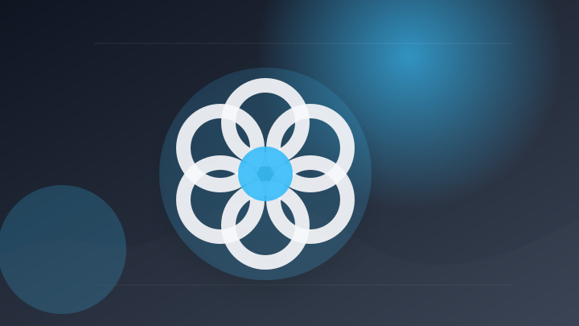
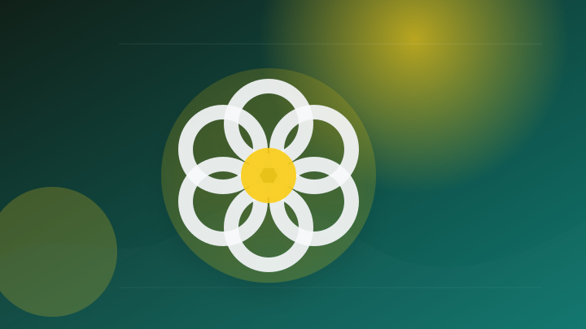
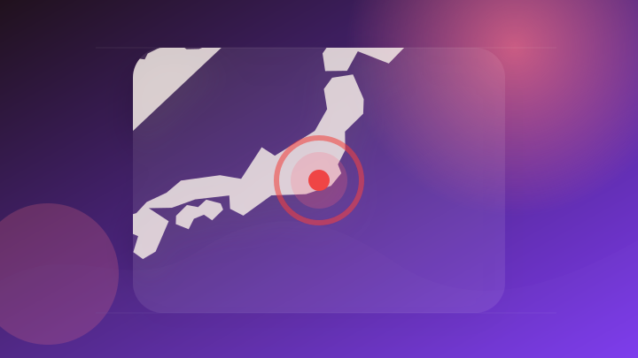
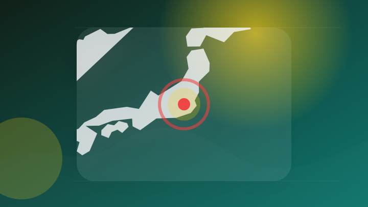
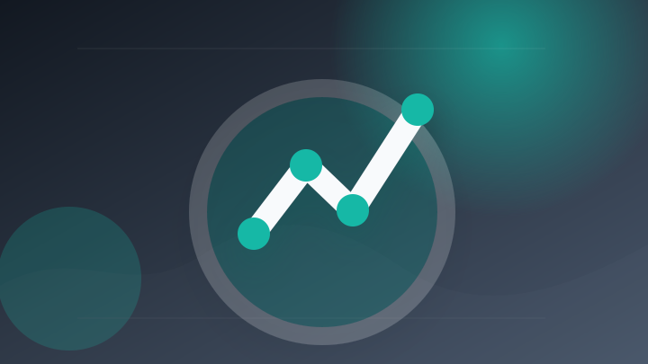
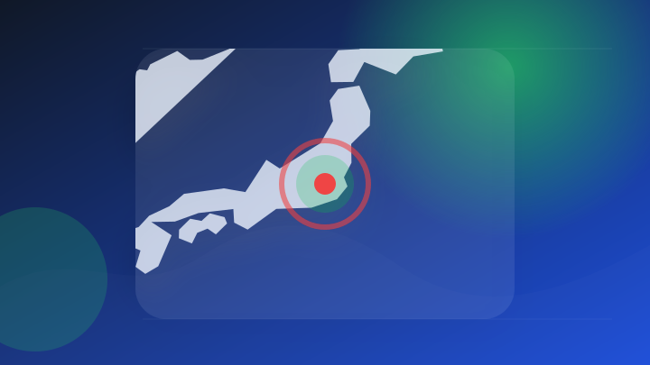
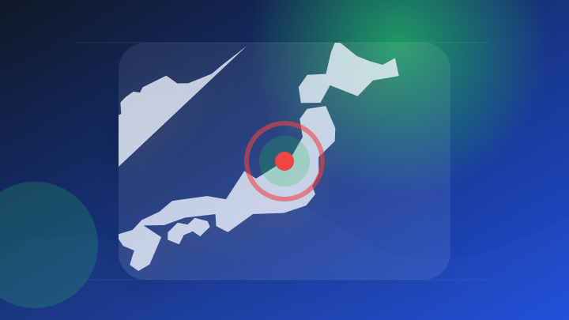
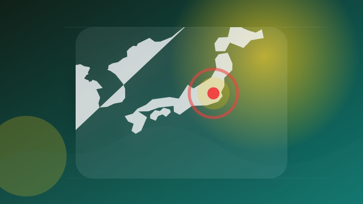

AI
2 topics

AI 配信記事 速報・続報待ち 要注意
OpenAI、AIの脆弱性を自動検証する内部用モデル「GPT-Red」 - Excite エキサイト
OpenAI、AIの脆弱性を自動検証する内部用モデル「GPT
- 注目ポイント
- 脆弱性・OpenAI｜出典: Excite エキサイト
- 見るべきポイント
- 対象製品・バージョン、利用可能時期、影響範囲と必要な対応を確認。

AI 配信記事 速報・続報待ち 要注意
OpenAI、AIの脆弱性を自動検証する内部用モデル「GPT-Red」（Impress Watch） - Yahoo!ニュース
OpenAI、AIの脆弱性を自動検証する内部用モデル「GPT
- 注目ポイント
- 脆弱性・OpenAI｜出典: Yahoo!ニュース
- 見るべきポイント
- 対象製品・バージョン、利用可能時期、影響範囲と必要な対応を確認。
政治
2 topics
政治 大手報道 報道確認 制度・政治
皇室典範改正案、17日成立へ 国会は小幅延長、副首都法案が焦点 - 毎日新聞
皇室典範改正案、17日成立へ 国会は小幅延長、副首都法案が焦点 毎日新聞
- 注目ポイント
- 法案｜出典: 毎日新聞
- 見るべきポイント
- 対象になる人、決定済みか検討中か、施行日・申請期限を確認。
政治 大手報道 報道確認 制度・政治
7/30開催 政府、骨太方針決定へ 「強い経済」への道筋を永濱氏が緊急解説 - 日経ビジネス電子版
7/30開催 政府、骨太方針決定へ 「強い経済」への道筋を永濱氏が緊急解説 日経ビジネス電子版
- 注目ポイント
- 政府｜出典: 日経ビジネス電子版
- 見るべきポイント
- 誰に影響するか、いつから変わるか、報道元が示す具体的な根拠を確認。
社会
2 topics

社会 大手報道 報道確認 動向確認
女子高校生殺害事件で元交際相手の男をストーカー容疑などで再逮捕 神奈川県警 - テレ朝NEWS
女子高校生殺害事件で元交際相手の男をストーカー容疑などで再逮捕 神奈川県警 テレ朝NEWS
- 注目ポイント
- 逮捕｜出典: テレ朝NEWS
- 見るべきポイント
- 発生場所と時刻、警察・消防など公的機関の発表、続報で変わった点を確認。

社会 大手報道 報道確認 動向確認
元教え子の女性に強制性交の疑い 埼玉県立高校教諭の男を再逮捕 [埼玉県] - 朝日新聞
元教え子の女性に強制性交の疑い 埼玉県立高校教諭の男を再逮捕 [埼玉県] 朝日新聞
- 注目ポイント
- 逮捕｜出典: 朝日新聞
- 見るべきポイント
- 発生場所と時刻、警察・消防など公的機関の発表、続報で変わった点を確認。
経済
2 topics

経済 大手報道 報道確認 動向確認
英経済は軟調、利上げの必要性低い＝英中銀副総裁 - ロイター
英経済は軟調、利上げの必要性低い＝英中銀副総裁 ロイター
- 注目ポイント
- 利上げ｜出典: ロイター
- 見るべきポイント
- 誰に影響するか、いつから変わるか、報道元が示す具体的な根拠を確認。
経済 配信記事 速報・続報待ち 市場・企業
NY株、米小売売上高と主力決算に注目 景気ソフトランディング見極めへ - BigGo ファイナンス
NY株、米小売売上高と主力決算に注目 景気ソフトランディング見極めへ BigGo ファイナンス
- 注目ポイント
- 決算｜出典: BigGo ファイナンス
- 見るべきポイント
- 対象期間、金額・変化率、前回との比較、生活や市場への影響を確認。
災害
2 topics

災害 大手報道 報道確認 要注意
埼玉 深谷のレベル4土砂災害危険警報を注意報に切り替え - NHKニュース
埼玉 深谷のレベル4土砂災害危険警報を注意報に切り替え NHKニュース
- 注目ポイント
- 災害｜出典: NHKニュース
- 見るべきポイント
- 対象地域、発生・更新時刻、自治体や気象機関の最新情報を確認。

災害 大手報道 報道確認 要注意
最大震度6強 15人が犠牲「中越沖地震」から19年 タオル使った安否確認訓練も《新潟・柏崎》 - 日テレNEWS NNN
最大震度6強 15人が犠牲「中越沖地震」から19年 タオル使った安否確認訓練も《新潟・柏崎》 日テレNEWS NNN
- 注目ポイント
- 地震｜出典: 日テレNEWS NNN
- 見るべきポイント
- 対象地域、発生・更新時刻、自治体や気象機関の最新情報を確認。
国際
2 topics
国際 配信記事 速報・続報待ち 動向確認
中国遼寧省でゴムボート爆発 7人死亡 - ライブドアニュース
中国遼寧省でゴムボート爆発 7人死亡 ライブドアニュース
- 注目ポイント
- 死亡｜出典: ライブドアニュース
- 見るべきポイント
- 発生場所と時刻、警察・消防など公的機関の発表、続報で変わった点を確認。
国際 配信記事 速報・続報待ち 動向確認
睡眠と死亡リスクの研究「時間の長さ」より「規則性」の方が影響か (2026年7月16日掲載) - ライブドアニュース
睡眠と死亡リスクの研究「時間の長さ」より「規則性」の方が影響か (2026年7月16日掲載) ライブドアニュース
- 注目ポイント
- 死亡｜出典: ライブドアニュース
- 見るべきポイント
- 発生場所と時刻、警察・消防など公的機関の発表、続報で変わった点を確認。
ライフ
2 topics
ライフ 大手報道 報道確認 要注意
「エアコンは使わない」善意の“義援金”で生活保護が廃止に 被災者を追い詰める“国のルール” 能登半島地震から2年半 - TBS NEWS DIG
「エアコンは使わない」善意の“義援金”で生活保護が廃止に 被災者を追い詰める“国のルール” 能登半島地震から2年半…
- 注目ポイント
- 地震｜出典: TBS NEWS DIG
- 見るべきポイント
- 対象地域、発生・更新時刻、自治体や気象機関の最新情報を確認。

ライフ 配信記事 速報・続報待ち 要注意
【速報７】ベネズエラ地震：避難生活が続く被災地で、赤十字は支援を継続｜トピックス｜国際活動について - 日本赤十字社
【速報７】ベネズエラ地震：避難生活が続く被災地で、赤十字は支援を継続
- 注目ポイント
- 地震｜出典: 日本赤十字社
- 見るべきポイント
- 対象地域、発生・更新時刻、自治体や気象機関の最新情報を確認。